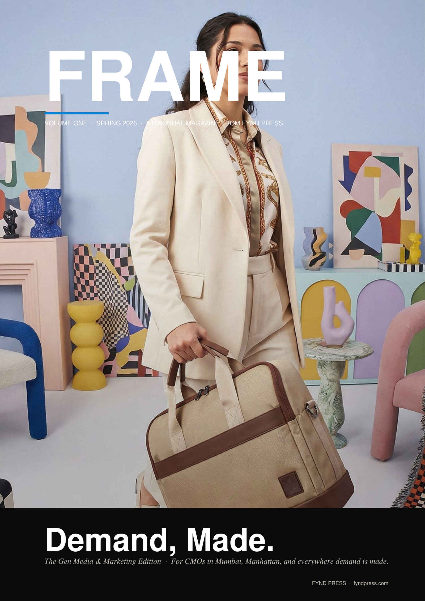

For the CMO who plans to ship more, sell more, and mean more — in Mumbai, Manhattan, and everywhere demand is made.

The deepest shift in marketing this decade is not that demand can be captured faster. It is that demand can be made — not as in forced, but as in crafted. Brought carefully into the world by the hands of someone who minded enough to make it well. FRAME Volume One is fifty pages on what that idea looks like in practice, in Mumbai, in Manhattan, and in everywhere demand is made.
Read non-linear. Whichever act you pick up first will leave you with something you can use by Monday morning — a question for your team, a number for the deck, a workflow to rewire.
These are the sentences our test readers underlined first. Read them as a sample of the voice.
Intelligence was the advantage of the twentieth century. Will is the advantage of the twenty-first.
If groceries arrive in ten minutes, why should an ad take two weeks?
Slop is the new mediocrity. Care is the new luxury.
The brief is not commissioned. The brief is triggered.
Personalisation is respect.
The new shelf is not a place. It is a context window.
Agents will negotiate prices. They will not manufacture desire.
Brand pays for performance. Strip the brand and performance has nothing to land on.
Direct or be directed. There is no middle.
What will you ship this week that you could not have shipped last year?
Each chapter pairs a photograph from Tokyo, Mumbai, or Brooklyn with the working argument. Below: four spreads, lifted out of context but representative.
By the time you finish reading this paragraph, a language model on a server somewhere will have tried a hundred ideas that would have been considered campaign-ready in 2022. It will have done so for the cost of a server rental. The advantage that follows is older and simpler than tools: knowing what you want, and being willing to defend the recognition against the noise.
Until very recently, video was a category. So was image. So was audio. That taxonomy is no longer useful. Video, today, contains eighteen distinct formats — each with a different use, a different cohort, a different unit economic. The CMO who plans against video in 2026 is planning against the wrong noun.
For a hundred years, the shelf was a physical place. For thirty years, it moved to a screen. In 2026, it is moving again — this time to a context window. The brand whose context the agent does not have access to is the brand the customer did not consider.
Before there was commerce, there was a fire. Around it, somebody told a story. The people who came back the next night came back for the story. The bowl of stew was incidental — a kindness, an excuse — but the reason for the gathering was the story. Five thousand years later, this fact has not changed.
Pick a number. Begin anywhere.
Enterprise CMOs, brand directors, growth leaders, founders, and operators — in India, the United States, the United Kingdom, the GCC, Southeast Asia, and everywhere else demand is made.
Written for the producer in Lagos, the strategist in Singapore, the editor in São Paulo, the founder in Bengaluru. Written for the people who are still trying.
Reading instruction
Non-linear. Pick a page. Begin anywhere. Every chapter stands alone. Designed for the hand and the screenshot, in that order. Bound to lie flat.
Drop your email. We'll send you the digital edition the day it goes live, and the print edition's shipping notice when bound copies leave Mumbai.
Volume One · 50 pages · digital + print. Volume Two follows in autumn 2026.